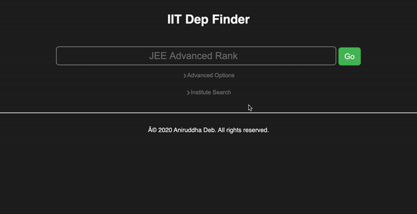

IIT Department Finder Launch (plus personal website domain)
Posted on Wed 28 October 2020 in Programming
For IIT admissions, I had created a small command line tool called iit_dep_finder.py
to check the departments I would get, given a particular rank. Once the round
one allocation results came out, I decided to create a web version, for others
to use as well. This article chronicles the steps I took, and while I did get
the department finder up and running, I also did a lot of other stuff in the
process (including changing the domain name, in case you haven't noticed :).
It's a long and uncensored article, so be warned.
Index:
- Flask Backend app Development
- Frontend Development
- NGINX and GUnicorn local setup
- Lightsail (VPS) setup and deployment
- Domain acquisition and Setup
- Enabling SSL and Security
Flask App Development
Developing the Flask app was probably the most rewarding part of the process, considering that the rest of it was DevOps, which is not exactly my cup of tea. I started out by downloading the data from https://josaa.nic.in/Result/Result/currentorcr.aspx as a set of HTML files, to retain their tabular format. The data was then scraped with BeautifulSoup and LXML into a CSV intermediate using the following snippet of code:
main_table = soup.find("table", {"class":"border_table_at"})
table_rows = main_table.find_all("tr")
for row in table_rows:
cells = row.find_all("td")
for cell in cells:
field = cell.text.strip()
if field == "Female-only (including Supernumerary)":
field = field.replace(" (including Supernumerary)", "")
outfile.write(field.replace(",", "") + ",")
outfile.write("\n")
The CSV file was then cleaned up a bit manually, such as removing commas at the end of the line and changing a few typos and values. After this, I created the SQLite database and added a table, whose schema was as follows:
CREATE TABLE IF NOT EXISTS "orcr_2020_r1"(
institute varchar(256),
department varchar(256),
quota varchar(4),
category varchar(32),
gender varchar(32),
OPR integer,
OPR_prep integer,
CPR integer,
CPR_prep integer
);
This was enough to store the required data. Notice the OPR\_prep and CPR\_prep
fields, which are there for Preparatory Course ranklists.
The ranks for these ranklists have a 'P' appended to the number. Since we want
to store the number as an integer for sorting purposes, the 'P' needs to be
abstracted into this boolean-esque field. After the table was created, it was
a matter of inserting all the records in the CSV file into the table. The CSV
file was used as a sort of 'staging location' for easily editing any errors in
the data or tweaking formatting.
Once the data creation methodology and tools were done, I moved on to developing the flask backend. There's nothing spectacular here, it was just querying the database based on the JSON data it received from the frontend and returning the results as a JSON encoded string. This part was probably the simplest, because the rest was pretty tricky.
Frontend Development
I'm finally able to understand why Javascript developers use such humongous frontend development frameworks like Angular and React: Frontend development without those is a huge pain in the ass

This is a close second for the most disliked part of this entire development cycle: writing HTML and CSS gets extremely repetitive. Since I was not using any framework, all the CSS (including the little dropdown transitions for advanced options) were written by hand. The JavaScript backend was slightly better, but JS does indeed feel like a hacky kludge of a language rather than something you can write an entire frontend app with (like google sheets), or maybe that's because I'm an amateur at the language.
Once the frontend was done, it didn't look too nasty. I still have to optimize
the frontend for mobile devices, but since I used div's for the layout, I don't
think there's going to be much to do.

NGINX and GUnicorn local setup
This is where the 'Flask 101' tutorials generally stop. Flask uses Werkzeug to serve it's files in the development stage, and you cannot carry that forward to production. Flask is merely a microframework to do the routing and keep the application logic in the backend. You need an application server to act as an interface for Flask and a web server to serve the static files, because the application server is not optimized to do that. I went with NGINX because it's light and smaller than apache, and GUnicorn because it's pretty well documented.
Before deploying the app on a VPS, I had to setup the same environment on my
local machine. I was following this brilliant DigitalOcean tutorial
but it proved to be tedious, because I'm using a mac, and UNIX-y
stuff like systemctl and launchd don't play well (actually they don't play
at all) on a mac. I then had to switch gears a bit and follow some part of
Cheng's blog
on setting up a similar development setup on Mac OS X. The long and short of it
is that NGINX on Mac doesn't ship with the sites-available and sites-enabled
folders, so you will have to create them manually and add the sites-enabled one
to nginx.conf. Once that is done, I made the iit_dep_finder.conf config
file in sites-available and linked it to sites-enabled. One point of difference
is the redirection of the API commands to the server; on the Mac machine,
GUnicorn runs on port 9000, whereas on the Ubuntu server, I can create a service
which has it's own socket, with the unix: prefix. This difference is
reflected in the server, where I made a custom gunicorn_prod.conf.py.
I had a lot of troubles with routing: the NGINX config files are not exactly
very intuititve, and finally going to the docs and learning the difference
between root and alias fixed it. root appends everything in the location
to the specified path, whereas alias appends only the content after the
location to the specified path.
Once routing was fixed on the Mac, I did a test deployment to a Ubuntu machine I had hooked up to my local network, which was a success. I was then ready to move to the next part
Lightsail (VPS) Setup and Deployment
This part ran in parallel with the development for a few days: turns out that Amazon needs you to fill in your payment details along with doing a phone number verification before your account setup is complete and you can use any of their services. This is really misleading, when they advertise a 'free month'. It's free only in the sense that they're not drawing any blood, but the needle will be firmly inserted and kept in your flesh, ready to draw blood once the month is over. Amazon is not the only provider to use this strategy: all SaaS/PaaS/Services companies are doing this now. This will turn into a full fledged rant if I continue, so more on this in a later blog post maybe.
After going back and forth with Amazon support over a couple days, my account
was finally given a stamp of approval and allowed to partake in the holy services
of AWS. I created the cheapest LightSail instance (with a free month :P) and
assigned a static IP to it. This step is important, and Amazon does not
do it automatically. After that, download the default SSH key and use it to
SSH into the server from your terminal. You can now proceed to start installing
stuff: apt works here, so does snap. The setup was pretty similar to the
stuff I did on the local ubuntu machine, and once it was done, I could access
the site by entering the static IP in my web browser.
Domain Acquisition and Setup
This was decently tricky for me, as I knew nothing about DNS and domain routing and related concepts. I purchased a domain off GoDaddy, and it was not a good experience. GoDaddy provides pretty cheap domains compared to the competition, and they try to poke money out of you in every other way. Still, the domain setup and update times were pretty good, and I had linked my primary domain to my server in under 2 hours. Not bad for a n00b like me.
The following day, I read more about DNS records, what A, CNAME and TXT records are. I then went ahead and created a small sitemap for my website, since I would also host my blog on the website
www.aniruddhadeb.com - Blog linked to GitHub pages
- /<Project> - Project websites from GitHub
apps.aniruddhadeb.com - My webapps
- /<App> - single webapp page (in this case, IIT_dep_finder)
The URL for this project would then be http://apps.aniruddhadeb.com/IIT_dep_finder.
I then had to add a CNAME to my DNS record with the apps prefix and redirect
it to the LightSail static IP. Following this, I linked up a custom domain with
GitHub Pages, the process for which is well documented here.
This was all on the domain side of things, and I had to configure my NGINX server
to serve from /IIT_dep_finder instead of from the root, which was frustruating
because I'm not that good with the NGINX config. Practice makes perfect, as they
say, and I'm a greenfoot when it comes to full stack development.
When all was said and done, I had a running website, with my blog on the main page and IIT dep finder on the URL above. All was good! or was it?
Enabling SSL and Security
This takes the cake for the most frustruating part of development. Not because
acquiring and setting up an SSL certificate was hard (Thank you to certbot!),
but because Amazon has their own fucking firewall in front of the LightSail
instance, and it took me 3 hours to figure that out. Important disclaimer for
all out there on LightSail: If you create a default ubuntu instance, ONLY
ports 22 and 80 are enabled by default, which is why my server was getting
NO HTTPS requests on 443. Setting up certbot was easy, as shown in the
DigitalOcean tutorial above. CertBot takes your domain and hooks you up with an
SSL certificate, which you have to renew every 90 days by typing in certbot renew.
Certbot also takes care of adding the certificate to your NGINX config automatically
so you don't have to do anything. However, when I tried hitting the link via
https:// instead of http://, the web browser would time out. I tried all
of the follwing, in order after that:
- Chrome inspector, to see if the request is going through. Request was going through
- Change NGINX config to listen on port 80 and serve pages. Worked on port 80
- Duplicated the NGINX config and ripped the SSL stuff, to go back to normal. Worked
- Tried restoring the SSL config lines one line at a time. Did not work
- Tailed the logs. Nothing coming in.
- Realized that there might be a firewall. Checked
sudo ufw status. Firewall was inactive - Created a firewall and allowed selective ports through. No change, https:// requests still timed out
- Realized that LightSail might have it's own firewall. Logged in to lightsail and saw the firewall settings.

Needless to say, I took the rest of the day off after that.
Conclusion and next steps
While I have a website that is fortunately up and running well, there are still
a lot of things left to do. Some of those include:
- Registering on search engines
- SEO with sitemaps and robots.txt
- Adding Google Analytics
- Adding some ads?
- Improvements on the app itself: more cutoff data and smarter suggestions
All of these things will be tackled one by one, but developing and setting up my first full stack app was a challenging experience and certainly one of the trickier projects I have undertaken so far.
The WebApp is live at https://apps.aniruddhadeb.com/IIT_dep_finder.